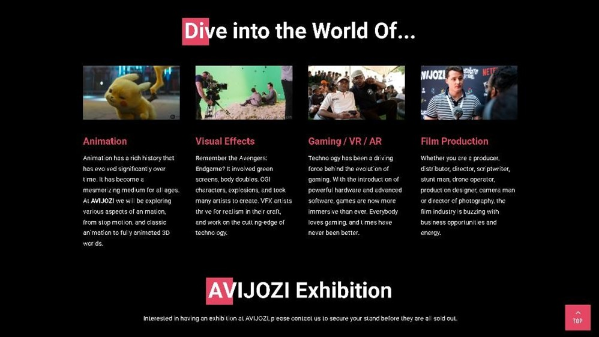
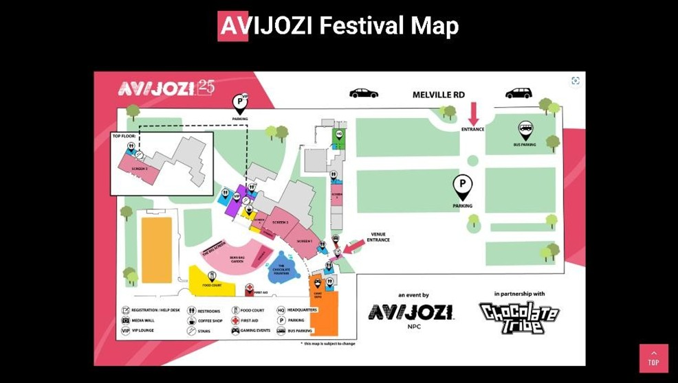
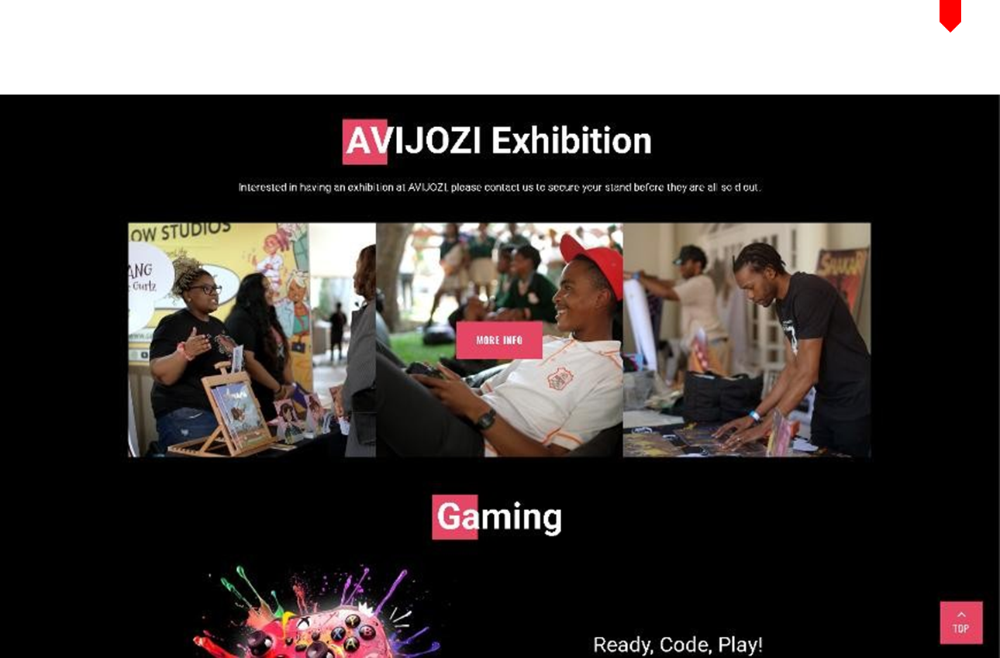
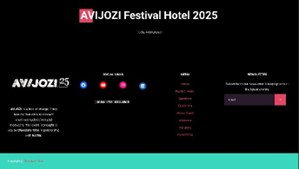

UX & UI Analysis
Figure1 (AVIJOZI, 2025) shows the presentation section at the function.
AVOJOZI is a creative industry festival or event that takes place in Johannesburg South Africa every year, hence its name. It aims to connect technicians, animators, writers, artist and more not just on a local scale but on a global scale too. Its website above is the perfect example of a well-constructed website that has great UI and UX. User Interface (UI) is the point of human and computer interaction as well as communication in a device. This includes display screens, keyboards, a mouse, and the appearance of one is desktop, (Rouse, n.d.).
All the above mentioned and more allow the user to interact with an application or website, through visual and audio elements. User Interaction (UX) on the other hand is the overall experience a user has when interacting with a system, product, or service. This encompasses the entire process from initial contact and awareness to post usage, focusing on the user's perspective and feelings brought about the entire process. Lastly ethics often called moral philosophy are the moral principles that govern a person's behaviour or decision, in the context of web development and design this focuses on specificity when one situates themselves in their current society.
The website is a great example of UI and UX as it has a clean and modern design, with a clear layout that makes it easy to navigate. The use of white space and contrasting colors helps to draw attention to important information, while the use of images and videos adds visual interest. The website is also responsive, meaning it looks good on all devices, from desktop computers to smartphones. This is important as more and more people are using their mobile devices to access the internet. This essay aims to prove that Interaction on the web is structured through the UI and UX. A good starting point for this premise should be, what makes a reliable website, alongside with, when to spot good UI and UX design choices. To answer the first question, we need to look at if a website has the following, usability, privacy, security, transparency, accessibility, inclusion, safety, ethical persuasion, and sustainability. All of which are referred to as the principles of web design. These principles of web design draw upon UI to take effect. AVIJOZI's website encapsulates most of the above principles very well. The website is designed in such a way that it is not dull, but rather eye captivating as it draws your attention to it.
This is shown in how easy it is to navigate the website; the layout is simple yet effective. From the moment you are introduced into the home screen there is a clear objective to entertain and gasp your attention with the colour pallet. It looks and feels legit, they highlight information which looks credible and relevant not to mention they provide all the necessary whereabout and know about on how to contact them. Now another aspect which they executed very well is the inclusion part, where even though this website is not everyone's cup of tea it does contain content for different people. May it be dying hard core game enthusiasts and animation admires or just your average event lover AVIJOZI has you covered.
Figure 2 (AVIJOZI, 2025) navigation bar
 Figure 3(AVIJOZI, 2025) highlights the different genres of work.
 Figure 3(AVIJOZI, 2025) the roadmap to get to the venue.
Now although that does make the website compelling, lets come to the back hand part of it. The UX design principles used in the above website. It does not take a rocket scientist to see that a lot of thought and care into the responsive design of this website. From the super-fast navigation and its responsiveness when hovering above it, or down to the gallery and speaker line-up. With all that said one cannot help noticing the lack of distinction on the website as the website stays consistent throughout, and although that works for them, I cannot help it but feel they played it safe by not incorporating something that stands out. An effective way to implement this would be to use The Von Restorff effect
 Figure 3(AVIJOZI, 2025) Exhibition.
 Figure 3(AVIJOZI, 2025)sponsors.
Figure 3(AVIJOZI, 2025)sponsors.
This would benefit a lot of the other pages on the website, by having some icons or sections that slightly are different in colour shape or size than the rest of the design choices they made would make their website that much more memorable. Another point to note is that there is a sheer number of overwhelming choices they user or viewer ius presented with from the moment they interact with the homepage, it just be the nav bar or where to go next in terms of information. As eighty percent of the website composes of images, and although they serve distinct functions while going through them, I could not help but feel as if they were a bit redundant.
I feel like some of the choices they could have simplified further even though in their own way they thought they were making things simple for viewers. A prime example of this would be to strip off the “contact us” option from the navigation bar and just have it stay fixed in the footer, because it is really confusing as in some pages there is contact information at the very bottom of the page. Thus, it can be confusing at times when finding your way across the website, hence this also affects viewer's attention span as they are more likely to leave the site before they get to the important sections of the website. Imagine someone who is not a digital art lover clicking onto the website and having a bumpy experience, they are most likely to exit the site as they may not feel compelled to continue due to the loss of interest brought about the way the website is structured
 Figure 3(AVIJOZI, 2025) contacts and footer .
Not to take away from the good they did, because there are some superior design choices, the optimization, sizing and spacing of the information they want you to know, as the icons/ shapes are bigger and pop up more and highlighted by crisp short animations. This comes back to one of the principles of web design, which is ethical personation, because by doing what I just mention, they can manage to influence the viewer to visiting their certain pages more than the rest because that is where they want majority of their traffic to go. The thing that I will give them props for is their positioning as they did an impeccable job at that. People are not less likely to read content that is in a zig zag line versus if something is centred, And they nailed it as whichever page you may navigate to the contents of that page will always be centred, making the viewer's experience that much better
Overall, AVIJOZI's website does a solid job of showing how UI and UX work together to shape the way we interact online. From how the layout pulls your attention in, to how the animations and icons guide your journey across the site, there was a plan behind how everything was built. But even though a lot of the design choices work well, there are still areas that could be improved to make the user experience smoother and more memorable. Things like simplifying options, being more selective with visuals, and adding standout elements would help the site go from good to great. The balance between function and style is there, it just needs a bit more risk and clarity in some places to really push the experience forward.
As I conclude I would say that based upon the above point, the use of good or bad UI and UX can make or break one's website. This was seen by how well AVIJOZI's website excels in a lot of the UI elements but because they played it safe with their UX its kind or made their website a bit expected. They had all the tools to make the user experience something exciting, but instead, they stuck to what works without taking any bold steps. That is not a dreadful thing, but it does leave the site feeling a bit too safe at times. A little more creativity in the way information is shown or how users move through the pages could have made a significant difference. Still, they managed to create a platform that is clear, easy to use, and visually strong which proves that UI and UX do not just support a website, they shape the whole experience.
References
Rouse, M. (n.d.) User interface (UI). SearchAppArchitecture. Available at: https://www.techtarget.com/searchapparchitecture/definition/user-interface-UI [Accessed 21 Apr. 2025].
AVIJOZI. (2025) AVIJOZI Festival. Available at: https://avijozi.com/ [Accessed 21 Apr. 2025].
Costanza-Chock, S. (2020), “Chapter 1 Design Justice: Community-Led Practices to Build the Worlds We Need”, in Design Justice: Community-Led Costanza-Chock, S. (2020), “Chapter 2 Design Practices: “Nothing about Us without Us””, in Design Justice: Community-Led
Practices to Build the Worlds We Need. Cambridge, Massachusetts: The MIT Press. Avalable at : https://designjustice.mitpress.mit.edu/.
Mathur, A. et al. (2019) ‘Dark Patterns at Scale: Findings from a Crawl of 11K Shopping Websites’, Proceedings of the ACM on Human-Computer Interaction, 3(CSCW), pp. 1–32. Available at: https://doi.org/10.1145/3359183.